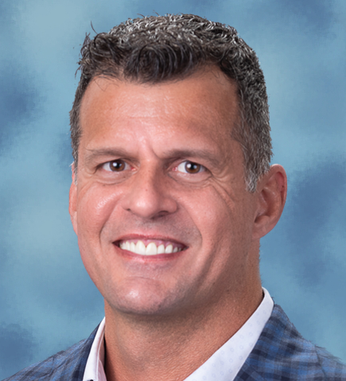

Our Mission
TechCon’s mission is to accelerate Africa’s digital transformation by creating a platform where stakeholders from various industries can learn, collaborate, and innovate using emerging technologies.
Past Speakers

Wayne Bishop
Wayne Bishop Jr. is Vice President of Industry Outreach and Strategy at Quanta Technology, a subsidiary of Quanta Services, and Fortune 500 company. He has worked in the electric power industry for over 30 years. Wayne is also an active member of IEEE PES where he has served in a variety of leadership roles including Vice President of Meetings and Conferences from 2019-2024, a member of the IEEE Power and Energy Society Governing Board and a member of the IEEE PES Executive Committee. Wayne chaired the 2024 IEEE PES Grid Edge Conference and Exposition. He also helped write and implement the Long-Range Strategic Plan for IEEE PES and is a Senior Member of IEEE. In addition, Wayne currently serves as a Senior Advisor to LUMA Energy, the electric utility in Puerto Rico. Previously, Wayne worked at OMICRON electronics for 13 years as Head of Marketing for North America. Prior to that, Wayne was employed at Doble Engineering Company for nearly 20 years in several senior management positions. In 2007, Doble’s Board of Directors appointed him to serve on the Executive Committee to broker the sale of Doble Engineering to ESCO Technologies.
Daniel Diaz
Daniel Diaz is a manager at Southern Company, leading the Data Acquisition and Operational Technology (OT) Cyber Security team for the non-nuclear generation fleet. He holds a B.S. in Electrical Engineering from the University of Puerto Rico – Mayagüez and an MBA from Georgia Tech’s Scheller College of Business. Daniel is also an IEEE Senior Member and a registered Professional Engineer in the states of Alabama and Georgia. He is the past chair of the Young Alumni Advisory Board at Scheller, supporting strategic initiatives and alumni engagement. Originally from Puerto Rico, Daniel is passionate about grid transformation and its evolution.

Rachel Williams
Rachel Williams serves as vice president of Transmission Field Operations at Georgia Power. In this role, she leads the strategic direction for Transmission Construction, Transmission Maintenance and Support and Project Management along with managing the Transmission capital portfolio. Prior to her current role, Williams served as director of Georgia Power’s Grid Investment Program establishing the strategic direction to ensure the successful execution of the 2023 – 2025 plan to invest $1.4 billion of capital expenditures in our Transmission and Distribution system to ensure optimal reliability, performance, and affordability. She has over 26 years of experience in the electric utility industry, specializing in power delivery operations, and has held various roles and responsibilities across all the Southern Company electric utilities and Southern Company Services.